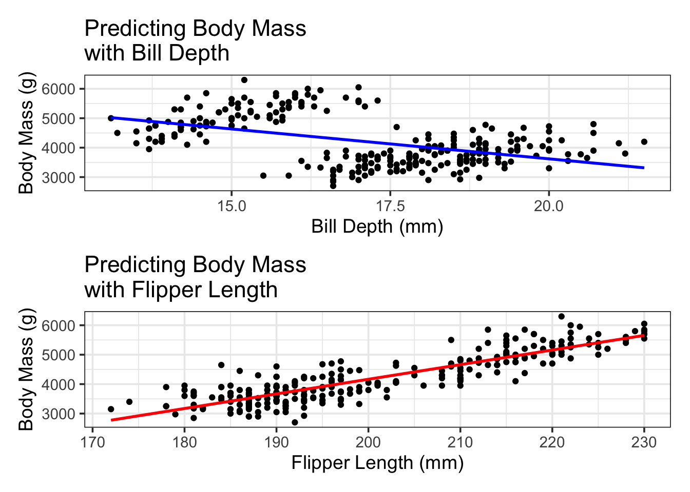

Confidence Intervals: Confidence intervals are used to capture a population parameter (population mean, population proportion, etc.) with some chosen degree of confidence. The general form for a confidence interval is given by: \[\left(\text{point estimate}\right)\pm\left(\text{critical value}\right)\left(\text{standard error}\right)\]
The point estimate is the sample statistic (sample mean, sample proportion, etc.) corresponding to the desired population parameter.
The critical value is determined by the desired confidence level.
The standard error is a measure quantifying variability in the estimate.
Approximate 95% Confidence Interval: We’ll often use an approximate 95% confidence interval. In this case we replace the critical value by 2, so the form is given by: \[\left(\text{point estimate}\right)\pm 2\left(\text{standard error}\right)\] We can interpret the interval by stating: “We are about 95% confident that [population parameter] is between [lower bound] and [upper bound].”
An Example: A study to determine whether the appearance of adverse side effects from a drug is dependent on gender looked at the frequency of these side effects appearing in males and females. A point estimate for the difference in proportions (\(p_{males} - p_{females}\)) resulted in a point estimate of \(0.075\) with a standard error of \(0.04\). Use an approximate 95% confidence interval to determine if there is evidence to suggest that negative side effects from this drug occur more often in males.
Hypothesis Tests
Hypothesis Testing: A hypothesis test is a method for testing statements about population parameters. Our hypotheses typically will look like one of the following:
\(\begin{array}{ll} H_0: & \beta_1 = \beta_2 = ... = \beta_k = 0\\ H_a: & \text{at least one }\beta_i\text{ is non-zero}\end{array} \hspace{1in} \begin{array}{ll} H_0: & \beta_i=0\\ H_a: & \beta_i\neq 0\end{array}\)
The hypotheses on the left reflect a Global Test for Model Utility (to determine whether the model has any utility at all), while the hypotheses on the right reflect tests for significance of individual predictors. The result of a hypothesis test depends on a p-value. If \(p < \alpha\), then we reject \(H_0\) and accept \(H_a\). If \(p\geq \alpha\), then we do not have enough evidence to reject \(H_0\). We usually use \(\alpha=.05\), but we can set different thresholds for different applications.
For us, rejecting the null hypothesis will typically mean that a model, or particular predictor, has some value.
Example I: A model is built to predict salary of city workers given years of service. The hypothesized model assumes a linear relationship between the response and predictor. That is, \(\mathbb{E}\left[salary\right]=\beta_0+\beta_1\cdot\left(years~of~service\right)\). The \(p\)-value reported for a global test of model utility was \(0.003\). Write the hypotheses for the test and determine the conclusion and its meaning.
Example II: A more complex model to predict salary included many potential predictors. One such predictor was years of education (beyond high school). The estimated coefficient on this predictor was \(475\) with a standard error of \(110\). Write the hypotheses involved in a test for the significance of this predictor and determine the result of the test. What does this mean?
Simple Regression Models and “The Big Idea”
Definition (Simple Regression): A simple regression model is a model of the form \(\mathbb{E}\left[y\right]=\beta_0+\beta_1 x\), where \(y\) is called the response variable and \(x\) is a predictor variable.
p1 <- penguins_train %>%ggplot() +geom_point(aes(x = bill_depth_mm, y = body_mass_g)) +geom_smooth(aes(x = bill_depth_mm, y = body_mass_g), method ="lm", se =FALSE, color ="blue") +labs(x ="Bill Depth (mm)",y ="Body Mass (g)",title ="Predicting Body Mass \nwith Bill Depth")p2 <- penguins_train %>%ggplot() +geom_point(aes(x = flipper_length_mm, y = body_mass_g)) +geom_smooth(aes(x = flipper_length_mm, y = body_mass_g), method ="lm", se =FALSE, color ="red") +labs(x ="Flipper Length (mm)",y ="Body Mass (g)",title ="Predicting Body Mass \nwith Flipper Length")p1 / p2
`geom_smooth()` using formula = 'y ~ x'
Warning: Removed 2 rows containing non-finite outside the scale range
(`stat_smooth()`).
Warning: Removed 2 rows containing missing values or values outside the scale range
(`geom_point()`).
`geom_smooth()` using formula = 'y ~ x'
Warning: Removed 2 rows containing non-finite outside the scale range (`stat_smooth()`).
Removed 2 rows containing missing values or values outside the scale range
(`geom_point()`).

Reading Regression Output
Consider the simple regression output below for predicting selling body_mass_g of a penguin with flipper_length_mm as the sole predictor.
The hypotheses for a global test of model utility are as follows:
\(\begin{array}{ll} H_0:& \beta_1=0\\ H_a: & \beta_1\neq 0\end{array}\) or \(\begin{array}{ll} H_0:& \text{Flipper length is not a significant predictor of price}\\ H_a: & \text{Flipper length is a significant predictor of price}\end{array}\)
We can find the \(p\)-value given for the model as a whole from the results of glance() on our fitted model. That \(p\)-value is \(9.388e-82\) (that’s really small!), and so we reject \(H_0\), and claim that our model is useful. We won’t always glance() at our models, but doing so can be really helpful, especially in the case where you are suspicious of coefficients and \(p\)-values for your individual predictors.
Testing for Significance of Individual Predictors: Since we built a simple linear regression model, there is only one predictor. That means that the global test of model utility tested the same hypotheses as a test for significance of flipper_length_mm as an individual predictor. Notice that the \(p\)-value for the global test of model utility matches the \(p\)-value associated with the flipper_length_mm predictor. This won’t be the case once we begin adding more predictors to our models.
Using and Interpreting a Model: Since our model to predict the body mass of a penguin depending on the length of the penguin’s flipper was significant, let’s use it! Note that the model we computed is:
Estimate the body mass for a penguin whose flipper_length_mm is \(200\)mm.
Interpret the intercept for the model, and comment on whether or not it makes sense.
Give an interpretation of the coefficient on flipper_length_mm.
What if we wanted to use more than one predictor simultaneously to predict body mass? Could we find a “better” model?
Multiple Regression Models
Definition (Multiple Regression Models): Regression models that include more than one independent (predictor) variable are called multiple regression models.
Definition (General Form for a Multiple Regression Model):
where \(y\) is the dependent (response) variable, while \(x_1,\ldots ,x_k\) are the independent (predictor) variables. The model which omits the error term,
is called the deterministic portion of the model. We will work exclusively with the deterministic portion of the model throughout much this course.
Note that in the general form of the multiple regression model, we may include higher order terms (like \(x_i^2\)), or mixed terms (like \(x_ix_j\)), or even terms for qualitative predictors! Models that include higher-order or interaction terms still fall under the category of linear regression. We’ll consider these terms later in our course.
Consider the regression output below for a model which predicts the body mass of a penguin given several of the numerical predictors available in the penguins data set.
Analyzing Multiple Regression Results: We would like to analyze our models on two levels: (i) global model metrics, and (ii) efficacy/significance of individual predictors and model terms. We can obtain global measures of model performance by piping our fitted model to glance(), while we can obtain measures related to individual model terms by piping our fitted model to extract_fit_engine() and tidy(). We’ll go through the results below.
Global Model Metrics with mass_multi_fit %>% glance()
The r.squared and adj.r.squared values are used to evaluate the proportion of variation in the response variable which is explained by our model. We use r.squared when dealing with simple regression, and adj.r.squared for multiple regression.
The r.squared and adj.r.squared values are measures of model fit, for which values closer to \(1\) are better.
We should be suspicious of values too close to \(1\) though!
The sigma value is the residual standard error for our model. It is related to the standard error of the prediction errors our model makes.
The sigma value is a measure of model fit, for which lower values are better.
We can use sigma to build approximate confidence intervals for our model’s predictions. We can say that we expect our model’s predictions to be accurate to within about \(\pm 2\)sigma. We’ll see better ways to build these intervals though.
The statistic and p.value are the computed test statistic and \(p\)-value for our global test for model utility. $$
\[\begin{array}{lcl} H_0 & : & \beta_1 = \beta_2 = \beta_3 = \beta_4 = 0\\
H_a & : & \text{At least one of the coefficients is not 0}\end{array}\]
The logLik, AIC, BIC, and deviance are alternative measures of model significance, based in information theory. We won’t utilize these metrics.
The df.residual is the number of observations which are utilized to estimate the residual standard error (sigma). The df earlier in the table is the number of \(\beta\) coefficients attached to variable terms in your model.
The nobs column indicates the number of observations used to fit your model.
Note: When we run these global analyses, we’ll care most about adj.r.squared, sigma, p.value, and df.residuals.
Model Term Metrics with mass_multi_fit %>% extract_fit_engine() %>% tidy()
The term column describes the term in our model – here the individual predictors.
The estimate gives the estimated \(\beta\) coefficient from the model-fitting process.
The std.error column gives the standard errors on the \(\beta\) estimates. This is useful for constructing confidence intervals for your estimates or for identifying problems with the regression.
The statistic column gives the test statistic for a hypothesis test of the form
where \(\beta_i\) is the coefficient attached to the corresponding predictor.
The p.value column gives the \(p\)-value for the test mentioned above.
Completed Example: Consider the multiple regression output below for our multiple linear regression model which uses bill_length_mm, bill_depth_mm, flipper_length_mm and year to predict the body_mass_g of a penguin.
Analyzing the Regression Output: We evaluate the regression model using the steps below:
Global Test for Overall Model Utility: We test the hypotheses
\(\begin{array}{ll} H_0: & \beta_1=\beta_2=\beta_3=\beta_4=0\\ H_a: & \text{At least one of the }\beta\text{'s is non-zero}\end{array}\)
Notice that the \(p\)-value associated with this test is \(1.82e-81\) (very small), and so we reject \(H_0\), and claim that our overall model has some significance.
Interpret Adjusted R-Squared: Notice that the value of Adjusted R-squared is \(.777\). This tells us that approximately “\(77.7\%\) of the variation in penguin body_mass_g is explained by our model.”
Get comfortable with the form of the sentence in quotes above. We will use it quite often.
Notice that we are explaining variation in the response, not variance. In statistics, variance means something very specific.
Test the significance of individual terms: Here we test each individual term to determine whether it contributes significantly to the model, or if it should be a candidate for dropping from the model. In general, we use many \(t\)-tests here.
notice that the \(p\)-values associated with bill_length_mm and bill_depth_mm are not significant (they exceed \(0.05\)). Since this is the case, we’ll drop the predictor corresponding to the highest \(p\)-value and re-fit our model. This procedure is called backward elimination.
Our new model has a slightly improved adj.r.squared value. This estimate tells us that “approximately 77.8% of the variation in penguin body mass is explained by our model”. The \(p\)-value for the global test of model utility has remained significant as well. Now, looking at the model term metrics, we see that the \(p\)-value for bill_depth_mm has remained insignificant while all the other predictors are statistically significant, so we’ll drop it as well.
Now that all of the model terms are statistically significant, we can consider this our “final” model. From the output, we can see that this “final” model is of the form:
What is the expected body mass (in grams) for a penguin whose flipper length is 200mm and which was observed in the year 2017?
To within approximately how many grams should we expect our predictions to be accurate? (Use 95% unless otherwise requested)
Find an interval which is “likely” to contain the body mass of a penguin whose flipper length is 200mm in the year 2017.
Remark: If a predictor variable \(x_i\) is dropped from a model, there are three possibilities:
There is no relationship between \(y\) and \(x_i\)
A linear relationship exists, but a Type II error occurred
A relationship between \(y\) and \(x_i\) exists but it is not linear
Regression: Assumptions and Process
Assumptions: Consider that you have a dataset of the form \(\left(y,x_1,x_2,\cdots,x_k\right)\) (think of an Excel table with these column headers), and a final regression model of the form \(\mathbb{E}\left[y\right]=\beta_0+\beta_1x_1+\cdots+\beta_kx_k\) (other terms are possible). Then, we have the following assumptions required for making inferences with our model:
Individual predictor variables are independet of one-another
Given values of \(x_1,x_2,\cdots,x_k\), the error term \(\varepsilon \sim N\left(0,\sigma\right)\)
The random errors are independent of one another
There are also some others that we will discuss later in the course.
Process: It might be helpful to see where our class sits in the statistical modeling process. Below is a short outline of the statistical modeling process.
Identify a question or problem which has inherent uncertainty and for which building a model makes sense
Collect, find, or synthesize data
Clean the data (datasets can be very messy)
Explore the data (basic summary statistics, plots, etc.)
Hypothesize the form of your regression model
Create an initial model or models
Refine the models
Check assumptions
Interpret and use the model (make inferences)
Check for reproducibility
We’ll be engaged in all of these aspects of the statistical modeling process except for data collection and checking for reproducibility. Additionally, since we’ll be using existing and publicly available data sets, we’ll be limited in the types of questions we can ask.